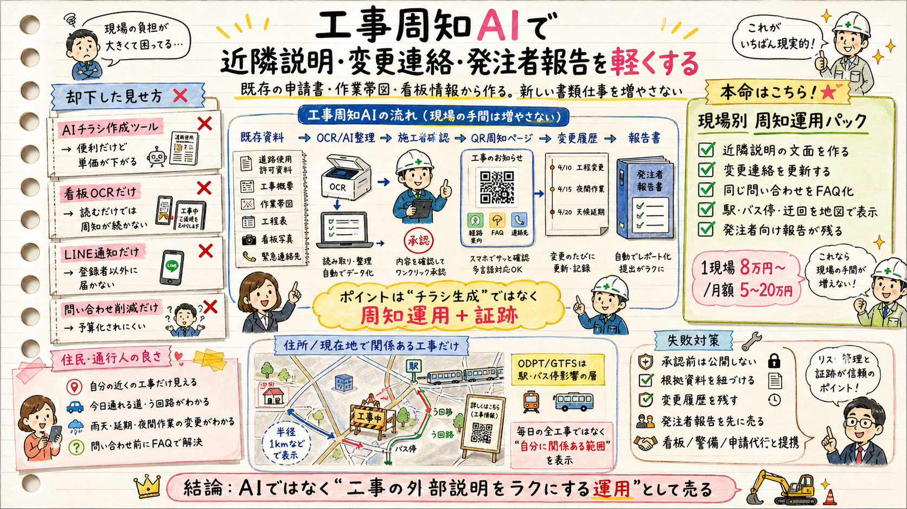

道路使用許可資料、工程表、作業帯図、看板写真。
工事周知AIを、入賞狙いの提出テーマにする
勝ち筋は「AIチラシ」ではなく、既存の工事資料から住民周知・変更履歴・発注者報告・駅/バス停アクセス影響までつなぐこと。

要項にどう刺すか
社会課題解決
工事現場の近隣説明、変更連絡、問い合わせ、発注者報告を減らす。住民側は「今日ここを通れるか」を見られる。
オープンデータ活用
ODPT/GTFSは、駅・バス停から目的地までの徒歩アクセス影響を判定する層として使う。ほこナビ、PLATEAU、地理院地図、東京都工事情報も補助データにできる。
技術的完成度
OCR/LLM構造化、地理空間判定、承認フロー、出典紐づけ、変更履歴、発注者報告を1本のデモにする。
UI/UX
事業者は既存資料を入れて確認するだけ。住民はQRを読むだけ。アプリ登録や通知の前に、現場看板とA4から届く設計にする。
2分デモの流れ
1. 既存資料PDF、工程表、作業帯図、看板写真を入れる。
2. AI抽出場所、期間、時間帯、規制、連絡先を構造化。
3. 人が承認信頼度、出典、要確認だけを直して公開。
4. QR周知住民ページ、A4、町会文面、FAQを生成。
5. 報告変更履歴、閲覧、問い合わせを発注者向けに出す。
90秒ピッチ原稿
工事会社は、申請書、工程表、作業帯図、看板、チラシ、変更連絡、発注者報告を別々に扱っています。住民や通行人は、市内の工事一覧ではなく、自分の家、店、通学路、駅からの道に関係ある情報だけを知りたい。 このサービスでは、工事会社がすでに持っている資料をOCR/AIで構造化し、場所、期間、時間帯、規制内容、問い合わせ先を抽出します。ただしAIは下書きで、人間が承認してから公開します。承認後、QRページ、A4チラシ、町会・商店会文面、FAQ、変更履歴、発注者レポートを生成します。 ODPT/GTFSは、工事そのものの情報源ではありません。駅・バス停から目的地までの徒歩アクセスに影響があるかを判定するレイヤーです。公共交通利用者が降りた後に困る「最後の数百メートル」を扱います。 住民は無料、広告なし、位置情報販売なし。支払者は工事主体です。ハッカソンでは、書類アップロードからQRページ生成、駅・バス停影響、発注者報告までをデモします。
MVPで作る画面
信頼度、出典、赤字の要確認、公開ボタン。
工事範囲と公共交通利用後の徒歩アクセス影響。
今日通れるか、時間帯、迂回、FAQ、連絡先。
現場看板やポスティングに使える文面。
変更前後、承認者、公開日時、問い合わせ記録。
将来の収益モデル
- ミニマム現場パック: 5万〜8万円
- 標準近隣周知パック: 12万〜25万円
- 高影響現場: 30万〜80万円
- 多現場事業者: 10万〜30万円/月
- 看板会社、警備会社、申請代行、印刷会社と提携
- 施工管理SaaS/発注者システム連携へ拡張